We all know Mike Wazowski and James P. Sullivan to be an inseparable pair, but that wasn’t always the case. From the moment these two mismatched monsters met they couldn't stand each other. Monsters University unlocks the door to how Mike and Sulley overcame their differences and became the best of friends.
Mike Wazowski’s lifelong dream is to become a Scarer at Monsters, Inc.—and he’s sure he knows just how to do it. Ever since he was a young monster, Mike’s had his eye on Monsters University, home of the world’s top Scare Program. Now a freshman and hopeful scare student, he’s well versed in the rich history, theory and technique required to reach his goal.
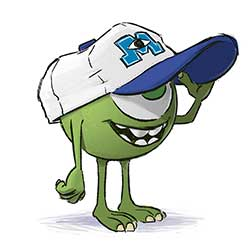
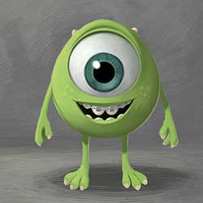
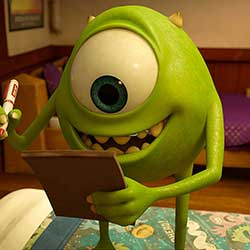

When it comes to scaring, Sulley’s a natural—his abundant size, fierce roar and family legacy of a long line of high-achieving Scarers make him a shoo-in for the esteemed Scare Program at Monsters University. But from the moment the overly confident monster, he learns the hard way that his unfettered talent and family ties can only get him so far.

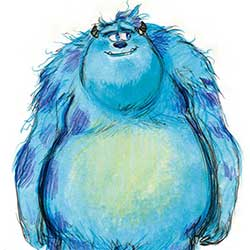
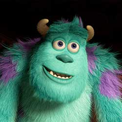

Monsters University freshman Randy Boggs has big aspirations for college life. The peculiar lizard-like monster with his host of gangly arms and legs plans to major in Scaring and lead an active social life filled with fun, friends and fraternity parties. If only he could get his embarrassing disappearing habit under control, he’d be good to go.
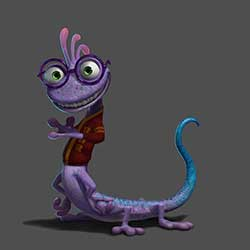

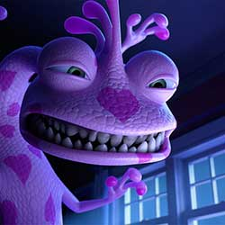
To Dean Hardscrabble, there are scary monsters and there are all other monsters. It’s no surprise she feels this way—she is, after all, a legendary Scarer and Dean of the School of Scaring at Monsters University. Aspiring Scare students must be up for the challenge to impress her, though she is convinced that her assessment of who is truly scary and who is not is never wrong.

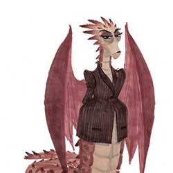
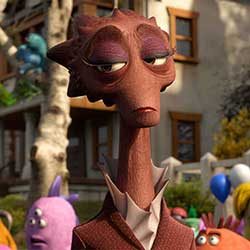

Scott Squibbles gives new meaning to the term “undeclared.” A sophomore whose dream of becoming a Scarer was squashed in his first year at Monsters University, “Squishy” is a bit of a wide-eyed wanderer—small, sweet, naïve and quiet—who, not surprisingly, still lives with his doting mother.

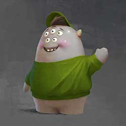

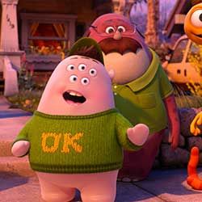
Faced with the realities of the economic downturn, Midwestern sales monster Don Carlton finds himself going back to school to learn new skills and pursue a dream career in Scaring. One of Monsters University's “mature” students and a founding member of the Oozma Kappa fraternity, Don brings his honest hardworking spirit to their endeavors.
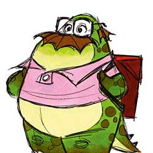
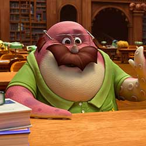
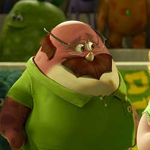

When it comes to Terri and Terry, it's hard not to ask, “Are two heads really better than one?” These bickering brothers have little in common: Terri with an “i” is a real romantic who's quick to spot the silver lining in any situation, while older brother Terry with a “y” sports a more cynical outlook on life.

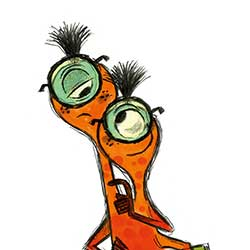


The ultimate free spirit, Art is a mysterious monster with a questionable background. By far the strangest member of the Oozma Kappas, Art bowls over the competition-sometimes literally-with his unique dexterity and wild-card ways. Nothing is scarier than the unpredictable, especially when it comes to this furry ball of bad.


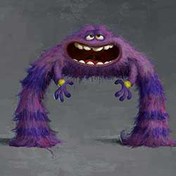
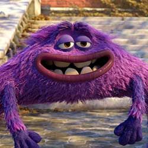
The Monsters University campus is huge, and was created to feel like there’s a new possibility around every corner, as life should feel at that age. It also contains some of the most incredible works of architecture ever made including the School of Scaring. Monumental and awe-inspiring, the School of Scaring is the centerpiece of MU.
Each Greek House at Monsters University reflects the attitude of the fraternity or sorority members living in it. Roar Omega Roar has history, Eta Hiss Hiss is more gothic, and Jaws Theta Chi is, as sets art director Robert Kondo puts it, "as junky as possible without actually being disgusting."
The Scare Games is an annual competition between the fraternities and sororities to prove who are the scariest monsters.
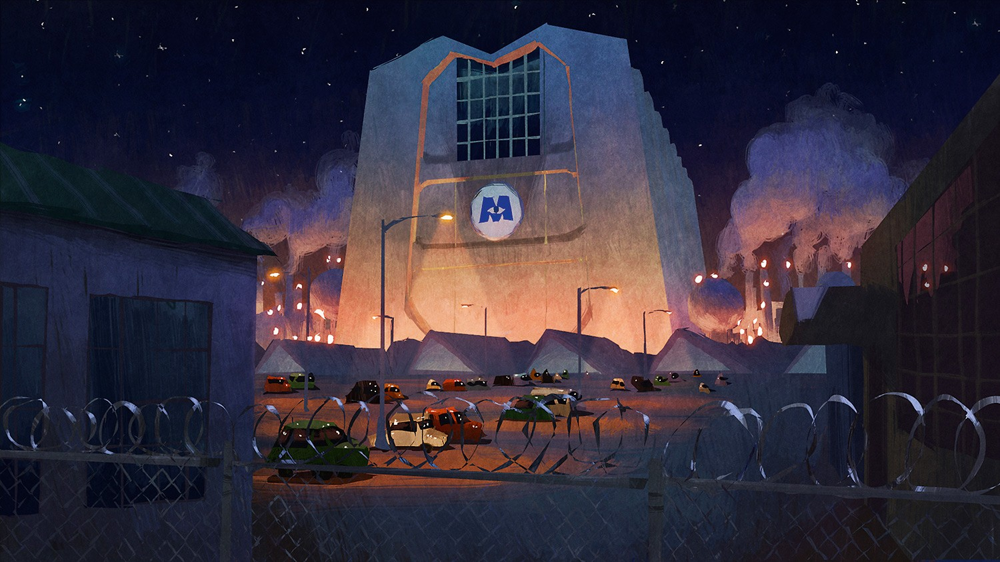
One of the most pivotal scenes in the film is when the Oozma Kappas (OK) take a field trip, and sneak onto the premises of Monsters, Inc. Peering in through a window, they catch a glimpse of a scare floor where all of their heroes are performing actual scares. "Whether they realize it or not," says Director Dan Scanlon, "it's the first time [Mike and Sulley] start to see that they both want the same thing."
The Train of Thought is an all-terrain choo-choo with a self-generating track that delivers daydreams, ideas and other thoughts to Headquarters. It’s also used to transfer memories to different regions of don’s mind. But take note: When don sleeps, so do the operators.
DIRECTED BY DAN SCANLON
PRODUCED BY KORI RAE, P.G.A.
EXECUTIVE PRODUCER
JOHN LASSETER, ANDREW STANTON,
PETE DOCTER, LEE UNKRICH
ASSOCIATE PRODUCER NICOLE PARADIS GRINDLE
STORY BY
DAN SCANLON
DANIEL GERSON & ROBERT L. BAIRD
SCREENPLAY BY
DAN SCANLON
DANIEL GERSON & ROBERT L. BAIRD
ORIGINAL SCORE COMPOSED BY RANDY NEWMAN
STORY SUPERVISOR KELSEY MANN, JASON KATZ
FILM EDITOR GREG SNYDER
PRODUCTION DESIGNER RICKY NIERVA
SUPERVISING TECHNICAL DIRECTOR SANJAY BAKSHI, GUIDO QUARONI
PRODUCTION MANAGER DAVID PARK
SUPERVISING ANIMATORS SCOTT CLARK
DIRECTOR OF PHOTOGRAPHY-CAMERA MATT ASPBURY
DIRECTOR OF PHOTOGRAPHY-LIGHTING JEAN-CLAUDE KALACHE
CHARACTER SUPERVISOR
CHRISTIAN HOFFMAN
SANJAY BAKSHI
KELSEY MANN
SETS SUPERVISOR ROBERT MOYER
SIMULATION SUPERVISOR CHRISTINE WAGGONER
EFFECTS SUPERVISOR JON REISCH
CHARACTER ART DIRECTOR JASON DEAMER
SET DESIGN & SHADING ART DIRECTOR ROBERT KONDO
LIGHTING DESIGN & CHARACTER SHADING DAISUKE "DICE" TSUTSUMI
GLOBAL TECHNOLOGY SUPERVISOR DAVID RYU
RENDERING SUPERVISOR ALEXANDER KOLLIOPOULOS
CROWD LEADS ADAM BURKE
CROWD TECHNICAL SUPERVISOR J.D. NORTHRUP
SOUND DESIGNER TOM MYERS
MIKE BILLY CRYSTAL
SULLIVAN JOHN GOODMAN
RANDY STEVE BUSCEMI
DEAN HARDSCRABBLE HELEN MIRREN
SQUISHY PETER SOHN
DON JOEL MURRAY
TERRI SEAN P. HAYES
TERRY DAVE FOLEY
ART CHARLIE DAY